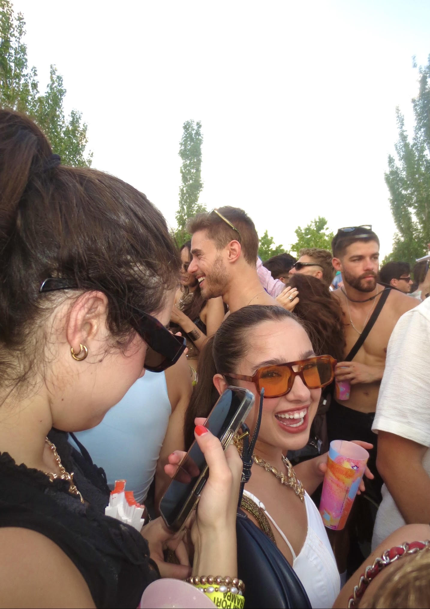
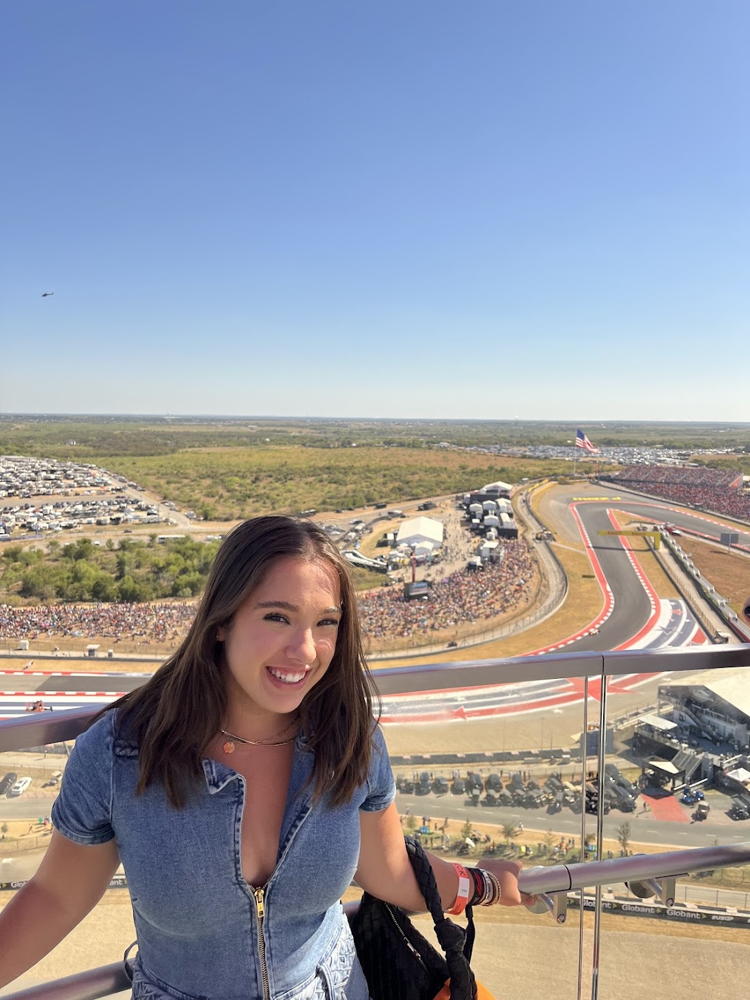
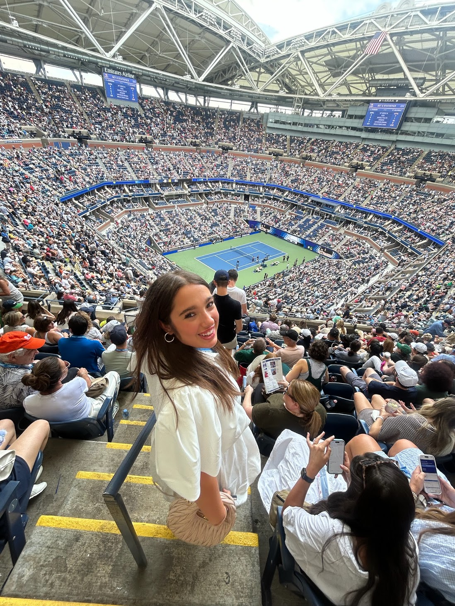

I’m studying business analytics at SMU after earning my marketing degree at Texas A&M. I like figuring out what matters to people and using what I learn to make a plan, whether I’m studying how students get around campus or helping shape a campaign.
Our team studied whether a proposed automated underground route between Main Campus and West Campus would address everyday transportation problems. We combined 156 survey responses with 26 team interviews to assess demand, reliability, and barriers to adoption.
My contribution
I created, published, and distributed the Qualtrics survey and analyzed perceived benefits and concerns. I conducted and coded five interviews, synthesized key themes, and worked on the Tableau dashboard structure and its analysis of transportation pain points. I also examined how tunnel construction could affect existing campus infrastructure.
What we heard in interviews
Bus timing, limited parking, and long trips made it harder to plan the day. Speed and accessibility made the Loop appealing, while safety and cost were the most frequently coded concerns about adopting it.
Explore the coded themes
Code frequencies across 26 team interviews. An interview could contribute to more than one theme.
What made it appealing
Speed and efficiency 19
Accessibility 15
Openness and curiosity 10
What gave people pause
Safety 12
Cost 11
Logistics 9
From research to a rollout plan
Survey respondents who expected the Loop to save time or make trips simpler reported stronger intent to use it. Our Tableau dashboard highlighted students and staff living on campus or in Bryan–College Station as audiences to prioritize.
See the proposed construction sequence
Plan the route and prepare the site. Study alignment, station locations, utilities, and soil conditions, then coordinate permits, staging, and temporary detours.
Build the tunnel and stations. Construct launch and recovery shafts, bore the tunnel, and build the stations.
Fit out and test the system. Install vehicle guidance, accessibility, and emergency systems, restore the surface, and test before commissioning.
Texas A&M · MKTG 448 Marketing Strategy · Spring 2026
KazooView | Go-to-market strategy
For a semester-long live-client capstone, our marketing team collaborated with biomedical engineering students on KazooView, a device concept designed to help parents get a clearer view of their child’s throat at home. We used interviews, surveys, and competitor research to understand what mattered most to parents, including material safety, ease of use, and making throat exams less stressful.
See how we got there
As Creative Strategy Lead, I researched potential partners and developed advertising concepts. Our team recommended introducing KazooView through parenting communities and nurse educators, using short demos to show how the device was intended to work. We presented our go-to-market strategy to the client and delivered a written report.
KazooView campaign board
Who we wanted to reach
Parents of young children who were looking for a less stressful way to get a clearer view of their child’s throat at home.
What we wanted them to understand
Short demos would show how KazooView was intended to work. We also recommended clear information about material safety and simple instructions.
Where we’d reach them
We proposed working with parenting communities and nurse educators, using short social videos and posts to introduce the concept and collect feedback.
For a team project, we explored how James Avery Artisan Jewelry could enter Mexico while preserving its emphasis on craftsmanship and jewelry with personal meaning. We compared competitors Pandora and Tous and considered how family milestones and gift-giving traditions could shape the brand’s positioning.
My contribution. I worked on the market entry strategy, promotional strategy, and implementation roadmap, outlining how James Avery could enter Mexico, reach customers, and roll out the launch.
See how we got there
We proposed direct exporting, e-commerce, retail partnerships, and flagship storefronts. Our launch concept, Joyas con Significado (Jewelry with Meaning), centered on Mother’s Day in Mexico and used family stories to show the meaning behind each piece.
For a class research project, our team looked at how Dutch Bros could engage college students ages 18–24 on social media. We combined secondary research with interviews, focus groups, and a survey to understand what students noticed and what might get them to act.
What we found
Participants described Dutch Bros as friendly and fast. Instagram and TikTok helped students discover promotions, but several participants said seeing an ad alone hadn’t prompted them to buy. Discounts and giveaways gave them more reason to try it.
What we recommended
Use short TikTok videos and Instagram Reels to showcase new drinks and staff, promote discounts and giveaways, and test campus pop-ups where students could sample drinks.
Our team tested whether a Poppi ad with gut-health messaging changed how likely people said they were to buy the soda. Of the 64 people recruited, 39 passed both attention checks and were included in the analysis.
Compare the three conditions
Mean self-reported purchase likelihood on a 0–100 scale
Water bottle control33.1
Poppi can only41.8
Poppi ad with gut-health messaging69.3
What we took from it
Participants who saw the gut-health ad reported higher purchase intent in this sample. Our team recommended testing clearer product messaging in future campaigns. The survey measured stated intent in response to an image, so actual purchases would need a separate test.
Texas A&M · MKTG 404 Data Visualization for Marketers
Alamo Drafthouse | Where promotions lose momentum
Our team used Tableau to examine how customers responded to offers by channel, city, age group, and promotion type. We wanted to identify where Alamo Drafthouse could focus its campaigns and make offers easier to redeem.
My contribution. I developed all the recommendations in our final presentation and built the Tableau visuals for channel performance, city-level engagement, buy-one-get-one versus discount offers by age, and the offer funnel.
Explore the offer funnel
The largest drop in the dataset was between viewing an offer and completing it.
Offers received76,277
Offers viewed57,725
Offers completed33,579
I used a map to show where the highest-performing cities were and a bar chart to compare their average offer completion rates. View full-size chart ↗What we recommended
Prioritize email, which had the highest completion rate in the dataset at 15.23%. Test easier redemption and compare buy-one-get-one offers with discounts by age group, since the gap in completion rates was most pronounced among older customers.
Our team developed EcoGlow as a class concept for a personal care subscription. Customers would receive everyday products such as soap and shampoo in refillable packaging and earn rewards for returning empty containers.
Competitors compared
4
Customer segments identified
3
How we evaluated the business
We used the Business Model Canvas to connect customers, partners, costs, and revenue. We applied Porter’s Five Forces and value chain analysis to examine the competitive pressures and operations behind the model. We also compared the concept with brands including Lush, Native, and Ethique.
What would make it work?
The refill program could give customers a reason to stay, but sourcing, shipping, and cleaning returned containers could put pressure on margins. Our team identified refill logistics and transparent reporting of environmental impact as priorities as the concept scaled.
Coordinated logistics for six or more recruiting and professional development events annually, supporting over 500 students and working with over 100 employer partners. Tracked program metrics in Excel and Qualtrics and prepared year-end reports to help leadership plan future events.
Jan 2026 – May 2026
Teaching Assistant, Amplify U
Texas A&M Athletics and Mays Business School
Supported 18 NCAA Division I student-athletes through individual feedback and professional development materials. Partnered with faculty to coordinate course operations and track student progress.
May 2024 – Aug 2024
Marketing Intern
Cobalt Construction
Analyzed social media engagement to recommend content changes and worked with project and operations teams to align marketing with company priorities.
Skills and training
Advanced Excel, Tableau, Qualtrics, JMP, SPSS, and Adobe Suite. Currently developing skills in SQL, Python, R, and Power BI.
Training in marketing analytics and applied natural language processing for business decisions. Fluent in Spanish.
Campus involvement
SMU
Secretary, Student Leadership Group
Graduate Women in Business
Cox Golf Club
Business Aviation Club
Texas A&M
Freshman Exemplifying Aggie Spirit Together (FEAST)
Women in Aviation
Aggie AchieveMATES
Alpha Delta Pi, Zeta Lambda Chapter
Aggie Blossoms
Business Analytics and Consulting Organization (BACA)
Study abroad · Summer 2025
Madrid, Spain
I spent the summer of 2025 in Madrid, my favorite city in the world. At Universidad Nebrija, I took classes in Spanish literature and international business management.
What stayed with me most was the pace of everyday life. I loved how relaxed it felt and how people made time to enjoy the moment.

At a music festival in Madrid, summer 2025. I love EDM and house music, so getting to go to a festival while I was there was a highlight.
Postcards from Spain
✷Madrid
I studied Spanish literature and international business management at Universidad Nebrija. My favorite part of living in Madrid was the relaxed pace and the way people made time to enjoy the moment.
The Boeing 747 is my favorite aircraft, and I’ve had the chance to fly on one three times. I was involved in Women in Aviation at Texas A&M and am now part of the Business Aviation Club at SMU.
Lufthansa Boeing 747 at the gate🏁Formula 1
Seeing Charles Leclerc take the checkered flag at the 2024 United States Grand Prix in Austin was a Formula 1 highlight for me.

United States Grand Prix · Austin, 2024🎾Tennis
I’ve played tennis since I was 12, and it’s still one of my favorite ways to stay active and spend time with my family.
Watching Carlos Alcaraz play live at the 2025 US Open was one of my favorite tennis memories.

US Open · 2025🍴Food
Spanish, Italian, and Mexican are my favorite cuisines.